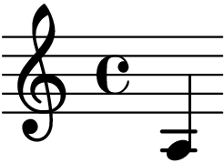
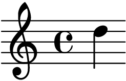
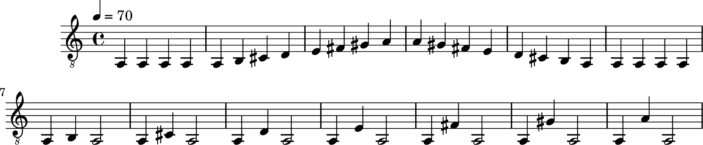
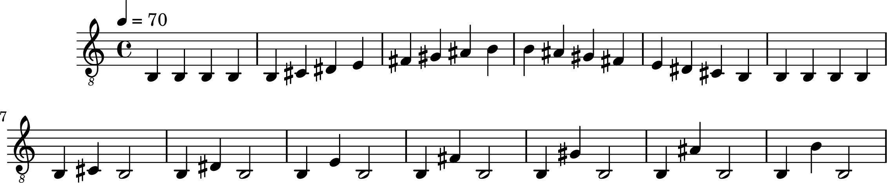
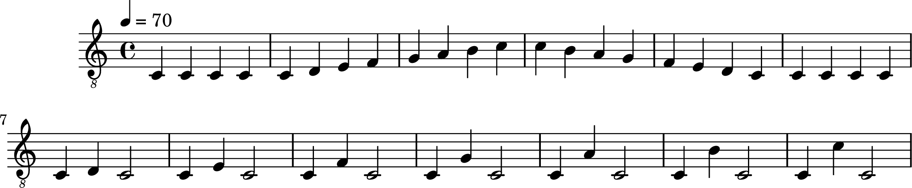
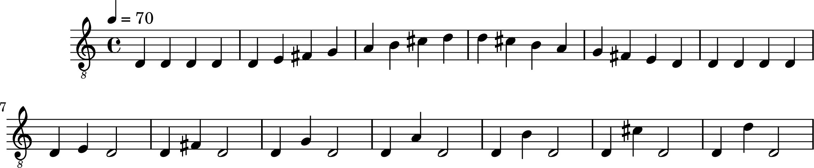
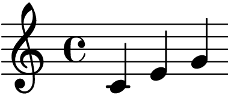
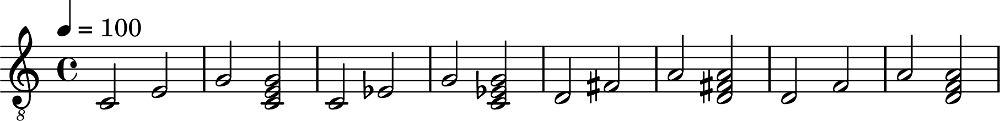
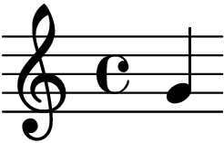

大萝北的视唱课¶
- date
2021-09-21
提示
买课联系 大萝北の扒谱教室
课程¶
音阶¶
找出几个适合自己音域（唱得舒服）的调。自我感觉是在 A2  到 D4  这样子。




小红帽¶


大小三和弦¶
Alice 把  刻进我的灵魂里了。
小三还是不准。

大二度小二度¶
大二已经耳熟能详，把一个音微妙地不唱准就是小二度 😂 。

旋律听辨 I¶
第一天听比较沮丧，什么都没听出来。但有两个简单结论：
上下行音程要都要练，之前一直忽视了下行的练习
主音在首调里非常重要，旋律是围绕主音的
第二天反复把课程看了几遍，有点听出来了。
一套初阶听辨方法（旋律从主音开始，跨度最大为三度）：
听一遍，跟着哼唱
以主音为参照点，在纸上画出旋律的起伏
.jpg)
分辨跨度
步紧旋律：非常紧凑，二度
小跨度旋律：稍微有些距离，三度
自主练习¶
G 大调小步舞曲 高声部¶
从 Bach - Minuet in G BWV Ahn. 114 提出来的。
原调 G Major，先换成 C Major 方便练习吧。
警告
📦extra/fluidsynth 2.2.3-1 的尼龙吉他音源在高音区  附近的时值似乎不太对，转调后规避了这个问题，先记一下。
![\version "2.20.0"
\header {
title = "Minuet in G"
}
snippetA = {
d'4 g8 a b c'
d'4 g g
e'4 c'8 d' e' fis'
g'4 g g
}
symbols = {
\time 3/4
\tempo 4 = 100
\key g \major
% 1-4
\snippetA
\break
% 5-8
c'4 d'8 c' b a
b4 c'8 b a g
fis4 g8 a b g
b4 a2
\break
% 9-12
\snippetA
\break
% 13-16
c'4 d'8 c' b a
b4 c'8 b a4
a4 b8 a g fis
g2.
\break
% 17-20
b'4 g'8 a' b' g'
a'4 d'8 e' fis' d'
g'4 e'8 fis' g' d'
cis'4 b8 cis' a4
\break
% 21-24
a8 b cis' d' e' fis'
g'4 fis' e'
fis'4 a cis'
d'2.
\break
% 25-28
% FIXME: d'2. ...
d'4 g8 fis g4
% FIXME: e'2. ...
e'4 g8 fis g4
d'4 c' b
a8 g fis g a4
\break
% 29-32
d8 e fis g a b
c'4 b a
b8 d' g4 fis
g2.
\bar "|."
}
\score {
<<
\new Staff \with {midiInstrument = "acoustic guitar (nylon)"} {
\clef "G_8"
\symbols
}
>>
\midi { }
\layout { }
}](../../.././_lilypond/9071e218c098d2d67c4fdb7167fd7f721cca27aa/music.png)
答疑¶
2021-10-27¶
- 谷月轩
Hello，大萝北老师[破涕为笑]。我最近在龟速地上您的视唱课，然后最近有一些疑问跟您请教下：
能感受到自己唱音名确实是越来越准了，但哼歌的时候还是认不出来自己哼的哪几个音，甚至上下行也会认错，但如果有琴在手里，又几乎马上就能把旋律摸索出来，要到什么时候才能不借助琴就挺准呢？
如何逐步摆脱音名？总感觉脱离音名就容易唱不准，尤其是跨度大的时候。同样，感觉不从 do 开始唱就不太准，比如唱大三，do - mi ，fa - la 都是，但后面就会不那么准一些。既然如此，比起通过音名记忆音高，直接把小二度到纯八度的感觉记下不是更直接吗？
- 大萝北
听自己哼唱的时候可以先自己判断一下，再用琴对照一下，看看是哪里容易判断错？是主音，还是音程呢
- 大萝北
可以记音程感觉，音名就是辅助记音程感觉的。用音名来唱音程只是为了说更好的找到音程，熟练之后就用拟声词来唱就好
- 谷月轩
刚下班，不好意思[苦涩]。
- 谷月轩
听到一段旋律还要听出来主音是吗，我完全没这个概念…
- 谷月轩
嗯嗯，这个明白了。
- 大萝北
嗯嗯 首调首先要确定主音才能确定旋律哇～
- 谷月轩
听到一段旋律，我假设它第一个音是 C，听出每个音之间的音高关系，不是也能得到一段旋律嘛？虽然和原来的旋律整体音高不一样。
- 大萝北
这样子就会有变化音，而且整体思路也不是首调方法了～
- 谷月轩
变化音是什么呀？
- 谷月轩
但也不是固定调？我不太懂，我感觉有一些基本的概念搞错了[破涕为笑]
- 大萝北
比如你旋律是345 543，你假设第一个是C的话，那么第二个就会变成bD了，就会多出来变化音
- 大萝北
这个方法应该更偏向于固定调的思路
- 谷月轩
所以，先找出主音，就容易根据其他音相对主音的听感确定它的音高咩？
- 大萝北
对的对的
- 谷月轩
比如刚才的 345 543，首调的人并不是听到 3 小二度 大二度 纯一度 大二度 小二度，而是听到了 三级 四级 五级 五级 四级 三级？
- 大萝北
嗯嗯是的
- 谷月轩
[苦涩]我居然搞错了这么久。
- 谷月轩
懂了懂了，谢谢老师。
评论
如果你有任何意见，请在此评论。 如果你留下了电子邮箱，我可能会通过 回复你。